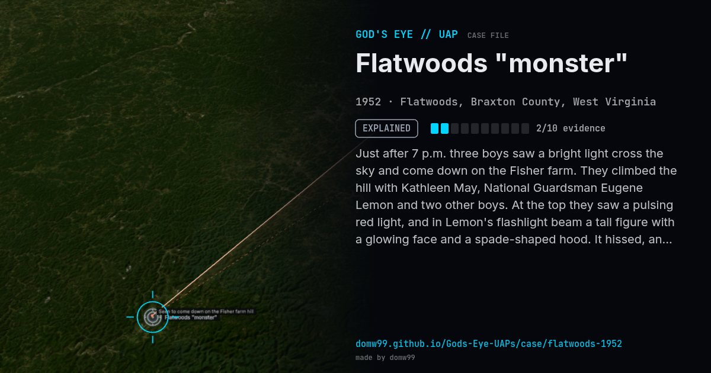

Flatwoods "monster"

Just after 7 p.m. three boys saw a bright light cross the sky and come down on the Fisher farm. They climbed the hill with Kathleen May, National Guardsman Eugene Lemon and two other boys. At the top they saw a pulsing red light, and in Lemon's flashlight beam a tall figure with a glowing face and a spade-shaped hood. It hissed, and they fled. Several later felt sick. A bright meteor was reported over Maryland, Pennsylvania and West Virginia that same evening.
Explanation
Investigator Joe Nickell concluded the light was a meteor seen over three states that evening, the pulsing red glow an aircraft beacon, and the "monster" a barn owl on a branch, magnified by fear. The witnesses' nausea fits fright and the smoke of the fire.
What was seen
Shape: Bright light; tall figure with a spade-shaped hood
Witnesses: 7 (the May brothers, Kathleen May, Eugene Lemon and others)
Duration: Minutes
Browse
- United States
- 1950s
- Explained
- Close encounters
- Many independent witnesses
- Documented physiological effects
- Lights and fireballs